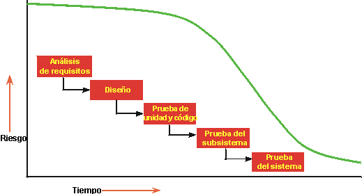
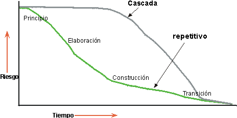

| Desarrollo iterativo |
 |
|
¿Qué es desarrollo iterativo?Un proyecto que utiliza desarrollo iterativo tiene un ciclo vital que se compone de varias iteraciones. Una iteración incorpora un conjunto de tareas (organizadas libremente en secuencias) de modelado empresarial, requisitos, análisis y diseño, implementación, prueba y despliegue, en varias proporciones en función de la ubicación que ocupa la iteración en el ciclo de desarrollo. Las iteraciones en las fases de principio y elaboración se centran en actividades de gestión, requisitos y diseño; las iteraciones de la fase de construcción se centran en el diseño, implementación y prueba, y las iteraciones en la fase de transición se centran en la prueba y en el despliegue. Las iteraciones deben gestionarse en un plazo de tiempo límite, es decir, la planificación de una iteración debe considerarse como fija, y el ámbito del contenido de la iteración debe gestionarse activamente para cumplir dicho plazo. ¿Por qué utilizar el desarrollo iterativo??Los diseños iniciales suelen fracasar con respecto a sus requisitos clave. Un descubrimiento tardío de defectos de diseño puede ocasionar excesos en los costes y, en algunos casos, la cancelación del proyecto. Todos los proyectos entrañan riesgos. Cuanto más temprano en el ciclo vital del proyecto se verifique que no hay riesgos, más precisa será la planificación. Muchos de los riesgos no se descubren hasta que se integra el sistema. Aunque cuente con un equipo de desarrollo experimentado, nunca podrá predecir todos los riesgos.  En un ciclo vital en cascada, no puede verificar si ha evitado un riesgo hasta una fase tardía del ciclo.  En un ciclo vital iterativo, puede seleccionar el incremento que se va a desarrollar en una iteración basada en una lista de riesgos clave. Como la iteración produce un ejecutable probado, puede verificar si se han mitigado o no los riesgos. Ventajas de un enfoque iterativoUn enfoque iterativo es por lo general superior a un enfoque lineal o en cascada por muchas razones diferentes.
Un cliente dijo una vez: "Con el enfoque en cascada, todo parece correcto hasta casi el final del proyecto, a veces hasta la mitad de la integración. Después, todo fracasa. Con el enfoque iterativo, no es fácil ocultar la verdad durante mucho tiempo." Con frecuencia los gestores de proyectos se resisten a utilizar el enfoque iterativo, por considerarlo una improvisación constante. En Rational Unified Process, el enfoque iterativo está muy controlado; las iteraciones se planifican por número, duración y objetivo. Las tareas y responsabilidades de los participantes están definidas. Se recogen medidas objetivas de progreso. De una iteración a la siguiente tienen lugar cambios, pero éstos también están controlados. Mitigar riesgosMediante un enfoque iterativo puede mitigar riesgos en fases más tempranas ya que muchos riesgos sólo se tratan y descubren durante la integración. Al desarrollar la fase temprana de la iteración, pasará por todas las disciplinas, ejercitando muchos aspectos del proyecto: herramientas, software asequible, habilidades de las personas, etc. Los riesgos previstos pueden terminar no siéndolo y pueden aparecer riesgos nuevos, no previstos. La integración no es una gran operación que sucede al final; los elementos se van incorporando de forma progresiva. En realidad, el enfoque iterativo es una integración casi continuada. Lo que antes era una operación larga, incierta y difícil (40% del esfuerzo total al final de un proyecto), compleja de planificar con precisión, se divide ahora en integraciones (de seis a nueve) más pequeñas que se inician con menos elementos que integrar. Adaptación de cambiosEl enfoque iterativo le permite tener en cuenta los requisitos cambiantes ya que irán cambiando durante el proceso. Los cambios en los requisitos y los requisitos siempre han sido una fuente de problemas para un proyecto, y han provocado tardanza en la entrega, incumplimiento de la planificación, clientes insatisfechos y desarrolladores frustrados. Hace 25 años, Fred Brooks escribió: "Cuenta con descartar uno porque lo harás." Los usuarios cambiarán de idea a lo largo del proceso; forma parte de la naturaleza humana. Forzar a los usuarios a utilizar el mismo sistema que imaginaron inicialmente no es una buena idea. Los usuarios cambian de parecer porque el contexto va cambiando a su vez. Aprenden más sobre el entorno y la tecnología, y ven demostraciones intermedias del producto durante el desarrollo. Un ciclo vital iterativo proporciona una gestión donde es posible realizar cambios tácticos en el producto. Por ejemplo, para competir con productos existentes, puede optar por lanzar antes que su competidor un producto con menos funciones, o puede adoptar otro proveedor para obtener una tecnología específica. La iteración permite además cambios tecnológicos durante todo el proceso. Si se produce un cambio de tecnología o ésta se convierte en un estándar ya que surge una tecnología nueva, el proyecto puede beneficiarse. Ésta es la razón fundamental para los cambios de plataforma y cambios de infraestructura de nivel inferior. Obtención de una mayor calidadMediante un enfoque iterativo se consigue una arquitectura más sólida ya que los errores se corrigen durante las diversas iteraciones. Durante las primeras iteraciones ya se detectan defectos. Los cuellos de botella de rendimiento se descubren y pueden reducirse, frente a la norma de descubrirlos en la fase cercana a la entrega. El desarrollo iterativo, a diferencia de la ejecución de pruebas hacia el final del proyecto, tiene como resultado un producto probado minuciosamente. Las funciones críticas han sido sometidas a muchas pruebas durante las diversas iteraciones, y de esta manera las pruebas y el software de prueba también han madurado. Aprender y mejorarLos desarrolladores pueden aprender durante el proceso, y las diversas competencias y especialidades se pueden emplear más a fondo durante todo el ciclo vital. En lugar de emplear mucho tiempo haciendo planes y afilando habilidades, los verificadores pueden empezar a realizar pruebas en una fase temprana, los escritores técnicos pueden empezar a escribir enseguida, etc. La necesidad de realizar cursos adicionales o de obtener ayuda externa puede detectarse en las revisiones tempranas de valoración de la iteración. El proceso puede mejorarse y pulirse a medida que se va desarrollando. La valoración al final de una iteración no sólo mira el estado del proyecto desde una perspectiva de planificación del producto, sino que analiza las necesidades que deben cambiarse en la empresa y el proceso para conseguir una mejor ejecución en la iteración siguiente. Aumentar la reutilizaciónUn ciclo vital iterativo facilita la reutilización. Es más fácil identificar partes comunes según se van diseñando e implementando de forma parcial que tener que identificar las similitudes desde cero. La identificación y el desarrollo de las partes reutilizables no es una operación sencilla. Las revisiones de diseño en iteraciones tempranas permiten que los arquitectos de software identifiquen una reutilización potencial no prevista, y las subsiguientes iteraciones les permiten desarrollar y madurar este código común. Con el uso de un enfoque iterativo es más fácil beneficiarse de productos comerciales de distribución general. Dispone de varias iteraciones para seleccionarlos, integrarlos y validar su idoneidad con la arquitectura. |
© Copyright IBM Corp. 1987, 2006. Reservados todos los derechos. |